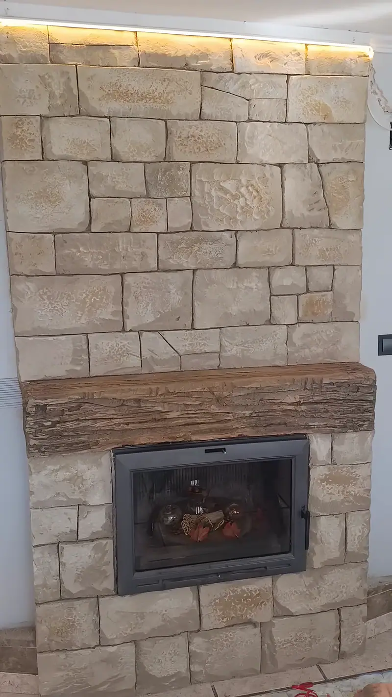
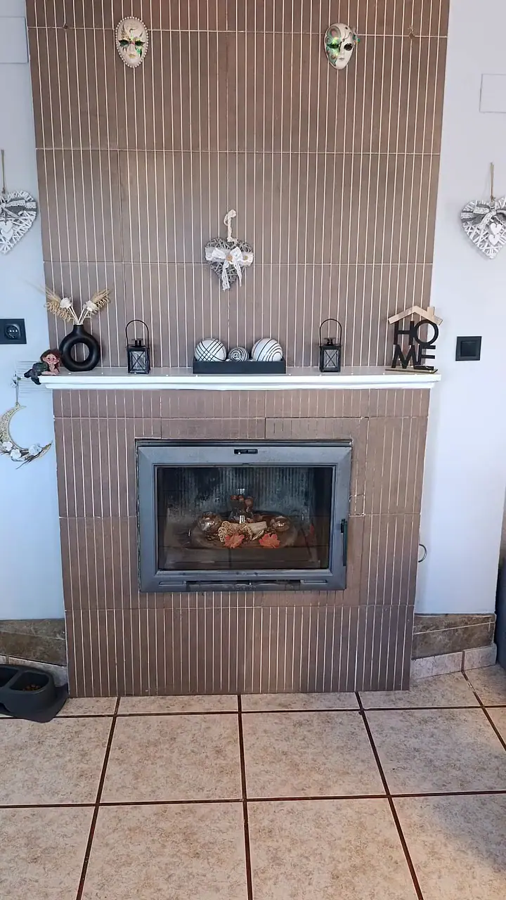

Tarragona · nov 2026
Chimenea de piedra seca y viga de madera
Una chimenea con lamas de madera convertida en una pared de piedra seca con viga rústica. Ni la piedra ni la viga son de verdad: todo es mortero, cortado y tallado a mano, piedra a piedra.